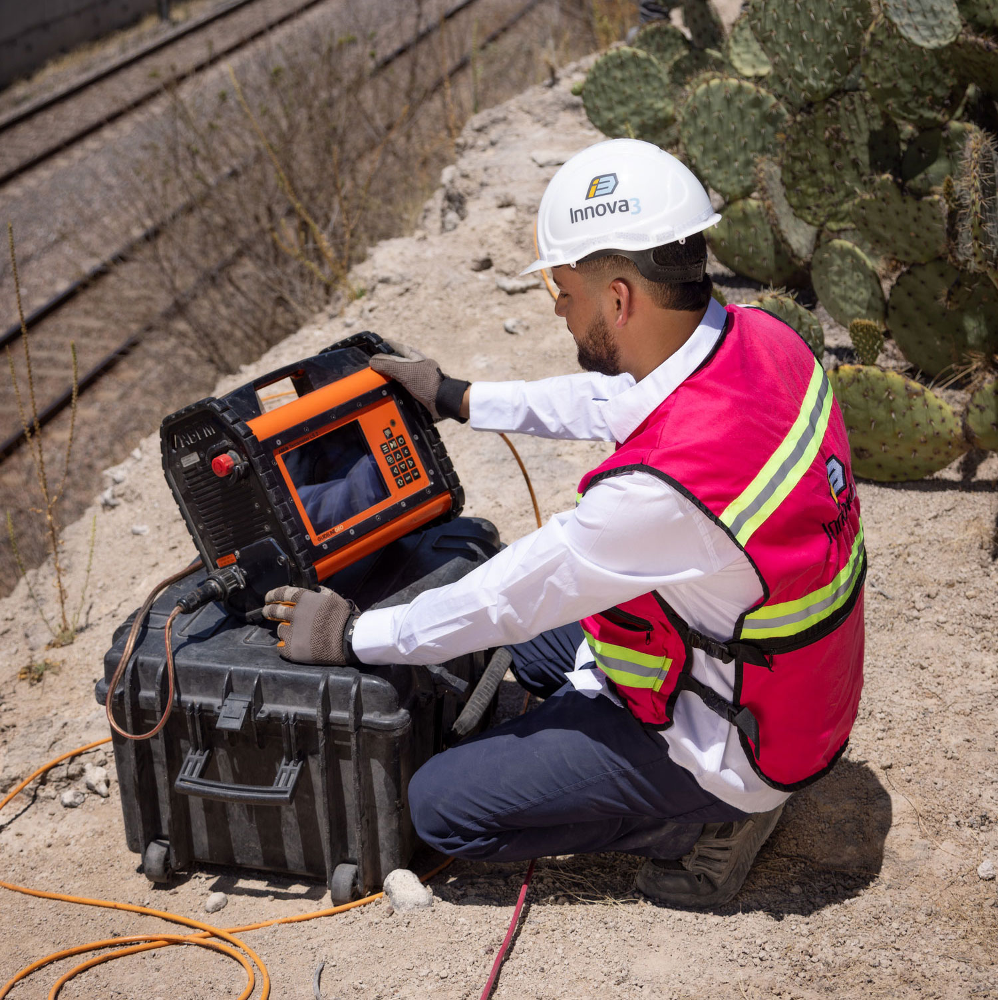
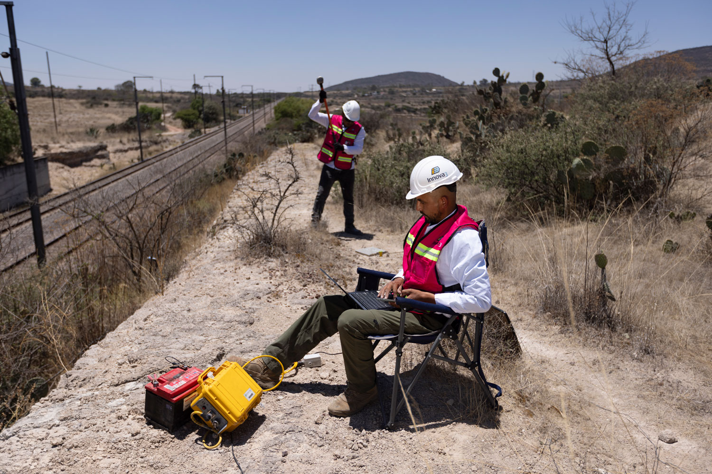
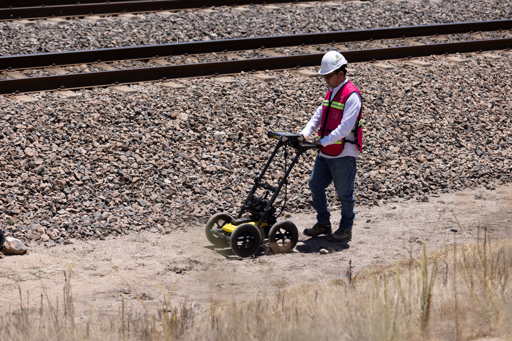

ESTUDIOS DE GEOFÍSICA
Estudiamos las propiedades físicas del subsuelo sin necesidad de excavar mediante equipos especializados, obteniendo información valiosa sobre la composición, estructura y comportamiento del terreno de forma no invasiva, lo que permite tomar decisiones de ingeniería con mayor certeza y menor costo.
Tomografías de resistividad eléctrica
Conoce qué hay bajo la superficie sin necesidad de excavar.
Esta técnica permite detectar cavidades, zonas con humedad, fracturas y cambios en los materiales del subsuelo, brindando información clave para reducir riesgos y planificar mejor cualquier proyecto.


Tendidos de Refracción Sísmica
Identifica la profundidad de las diferentes capas del terreno y localiza la roca sana.
Es una herramienta ideal para conocer las condiciones del subsuelo, estimar la facilidad de excavación y diseñar cimentaciones con mayor certeza.
MASW (Análisis multicanal de ondas superficiales)
Evalúa la rigidez del terreno y determina parámetros esenciales para estudios sísmicos, como el Vs30.
Esta información ayuda a entender cómo responderá el suelo ante cargas y movimientos sísmicos, aportando mayor seguridad al diseño de la infraestructura.


H/V (Relación Horizontal a Vertical)
Permite conocer la frecuencia natural del terreno a partir de las vibraciones ambientales.
Es una técnica rápida y no invasiva que ayuda a evaluar el comportamiento sísmico local y complementar estudios geotécnicos y de microzonificación.
Georadar (GPR)
Localiza tuberías, servicios enterrados, cavidades, refuerzos de concreto y otros elementos ocultos sin necesidad de romper o excavar.
Su rapidez y precisión lo convierten en una excelente herramienta para inspecciones de infraestructura y proyectos de construcción.

Down Hole
Obtén un perfil detallado del comportamiento sísmico del subsuelo mediante mediciones realizadas dentro de una perforación. Es una de las técnicas más precisas para caracterizar el terreno y generar información confiable para proyectos de ingeniería y diseño estructural.
Es una de las técnicas más precisas para caracterizar el terreno y generar información confiable para proyectos de ingeniería y diseño estructural.